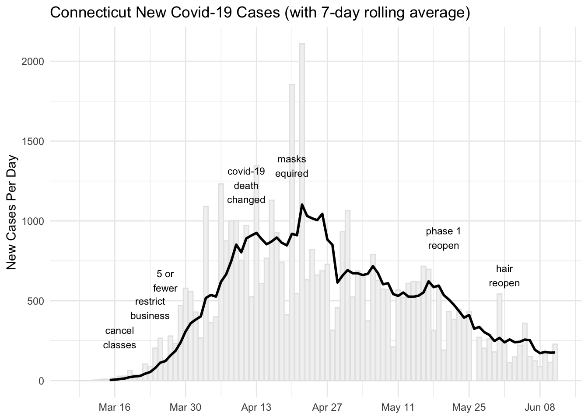
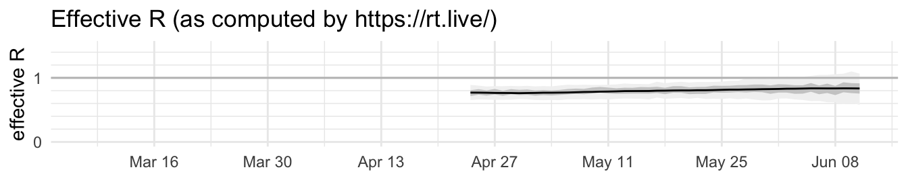
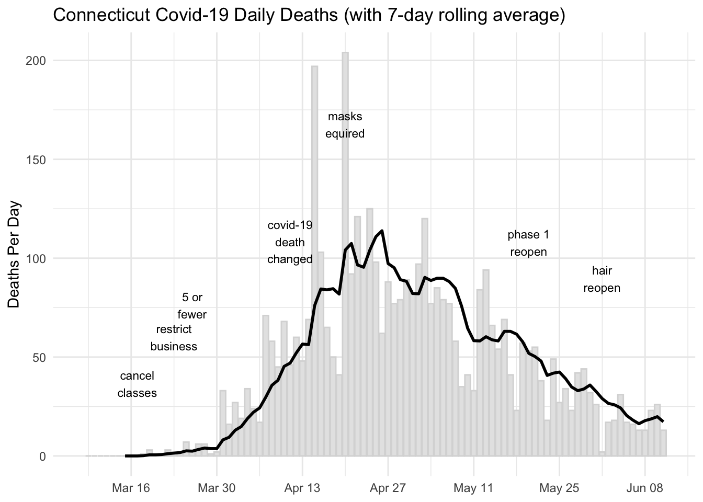
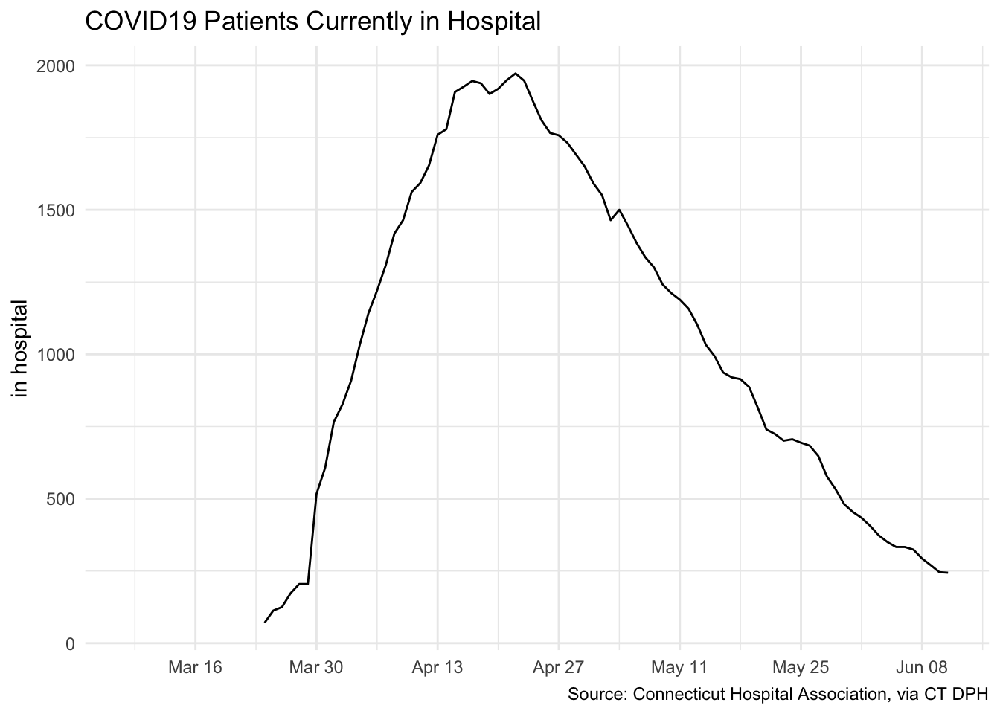

The post I created back in March aimed to track the growth of Covid-19 as it hit Connecticut. Back then (at the end of March) I didn’t realize that the greater New York area (including Connecticut) would be the center of the first wave in the US. At that time what I was reading focused on the nature of exponential growth of an epidemic. We were urged to “flatten the curve” and there was an emphasis on the shape of the growth of cumulative cases and deaths caused by the virus. I have been upading the figures in that post each evening. During tht time the Connecticut data portal has expanded, and I’ve built some R code that let’s me easily update that post. I’ll use the same data infrastructure for this post as well.
This post focuses on what is happening recently. The aim is to use the recent trend to get some idea of the near future. The first plot will show the average number of new cases reported each day along with a line that displays the rolling seven-day average. Typically there are day-of-the-week effects in the reporting so it’s best to focus on the seven-day average.
The plot show the history of new cases and also shows the actions in some of Governor Lamont’s executive orders.
The number of new cases peaked in mid April and then began to decrease almost as rapidly. See this site for an estimate by state of the effective value for Rt, the average number of people who become infected by an infectious person. The site is described in this article at Vox.com.
Note that as of June (and a month previous), Connecticut, New York, and New Jersey have among the lowest values for Rt in the country. This is good news for us in Connecticut.
   
These charts shows the counts of cases and deaths as they are reported by the Connecticut Department of Public Health. Reports sometimes end up in batches. There is a day of the week effect, with fewer cases on weekends. Some of the unusually large peaks and valleys in these charts are due to reporting process. The DPH has also begun producing reports based on the date a sample was taken for a test and for the date of death. That’s a more accurate way to look at the change over time, but it means the data for the most recent days are hard to interpret because some data may be “in process” and not yet reported. In these charts I have used “date of report” rather than “date of sample taken” or “date of death” because that gives me all of the recent data that is available and because that is what most other data projects (such as the Covid-19 Project or the New York Times) have been using.